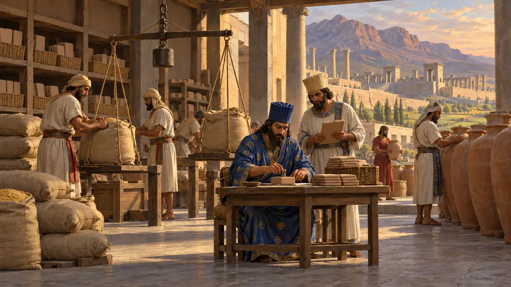
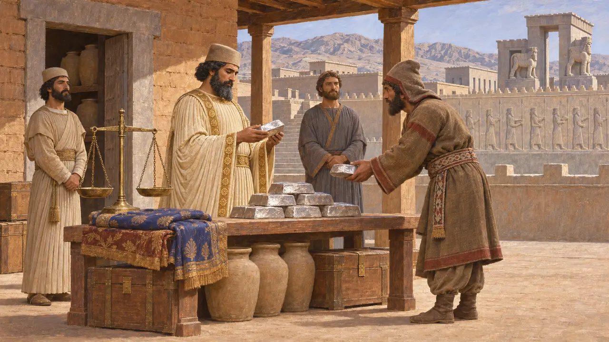
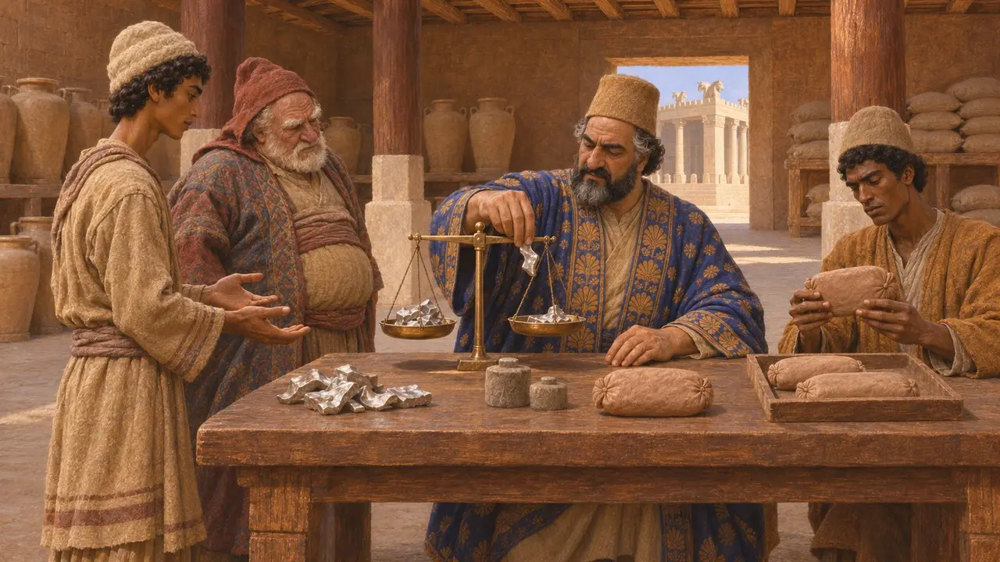
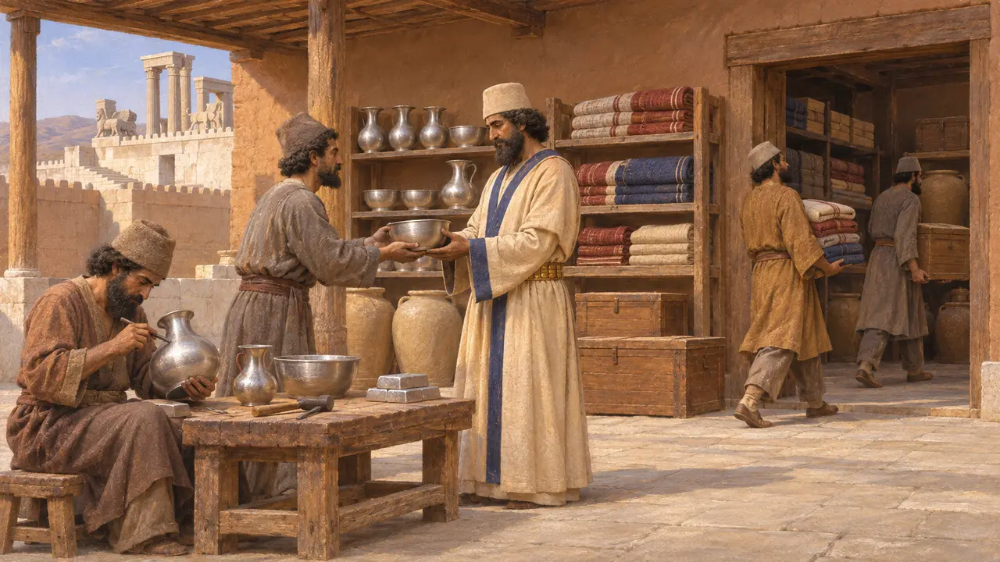
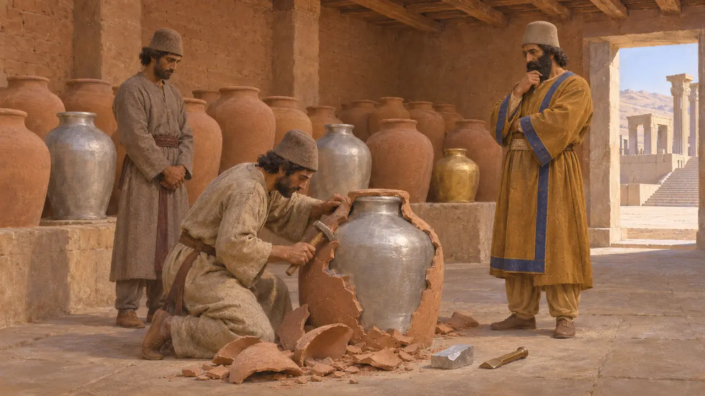
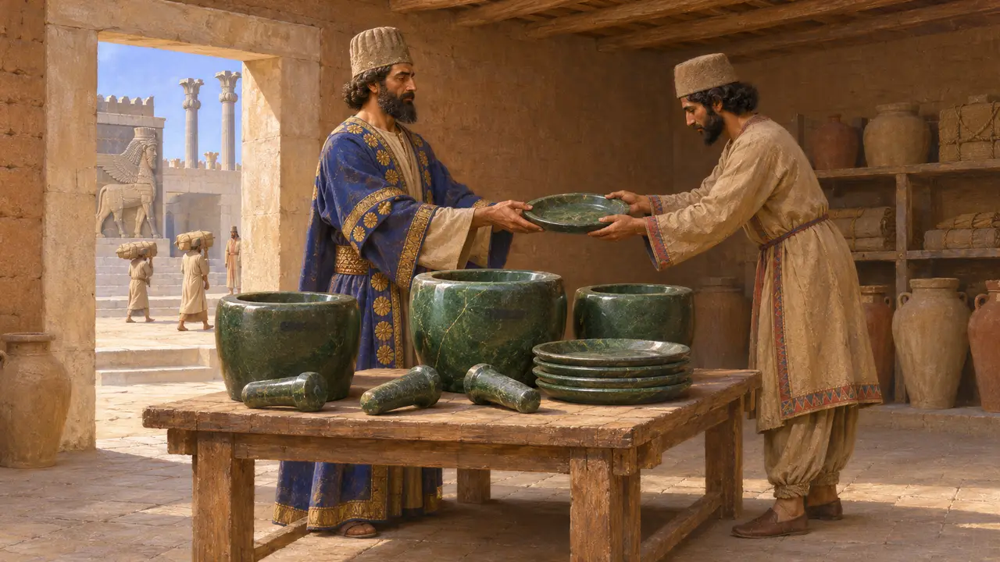

Il tesoriere
Custode dell'argento e dei beni immagazzinati del Re, Persepoli, fine VI-V secolo a.C.
Il tesoriere, in persiano probabilmente ganzabara, custodiva i tesori del Re: riserve di argento, oggetti preziosi e manufatti conservati nei centri reali. A Persepoli il tesoriere riceveva ordini scritti, pagava i lavoratori in argento pesato e gestiva personale e laboratori. Le tavolette del Tesoro provenienti dal suo ufficio sono tra le migliori testimonianze di come la corte achemenide amministrasse la ricchezza.
Nel gioco: Il gioco presenta il tesoriere come il ganzabara dell'archivio di Persepoli e custode dei tesori del Re. Le testimonianze dell'archivio sui tesori iniziano solo nel 509, perciò i tesorieri precedenti non sono documentati direttamente.

Il titolo in più lingue
Nelle fontiNessuna iscrizione in antico persiano riporta il titolo per esteso. Gli studiosi lo ricostruiscono come ganzabara, che significa all'incirca 'portatore del tesoro', a partire dalle forme in cui fu mutuato da altre lingue: kanzabara nelle tavolette elamite e ganzabar in aramaico. La stessa parola compare come gizbar nell'ebraico del libro di Esdra. La sua diffusione in così tante lingue mostra quanto lontano viaggiassero i termini amministrativi persiani.
G. Cameron, Persepolis Treasury Tablets, 1948; Ezra 1:8; P. Briant, From Cyrus to Alexander, 2002

Le tavolette della Tesoreria di Persepoli
Nelle fontiNegli anni '30 del Novecento gli archeologi che scavavano l'edificio del Tesoro a Persepoli rinvennero diverse centinaia di tavolette e frammenti d'argilla in elamita, datati dal 492 al 458. Per lo più si tratta di ordini sigillati che incaricano il tesoriere di pagare in argento determinati gruppi di lavoratori, spesso in sostituzione di parte delle loro razioni di pecore o di vino. I pagamenti erano in argento pesato, misurato in karsha e sicli, non in monete.
G. Cameron, Persepolis Treasury Tablets, 1948; E. Schmidt, Persepolis II, 1957

I tesori come magazzini e laboratori
Nelle fontiLe tavolette delle Fortificazioni di Persepoli, datate dal 509 al 493, menzionano tesorerie, dette kapnuški in elamita, a Persepoli e in altre località della Persia. Non erano semplici depositi di metallo prezioso: ospitavano artigiani e manovali, i cosiddetti lavoratori della tesoreria, e custodivano manufatti finiti, cosicché il tesoriere dirigeva un'impresa produttiva oltre che una camera del tesoro.
R. Hallock, Persepolis Fortification Tablets, 1969; P. Briant, From Cyrus to Alexander, 2002

Gli autori greci sul tesoro reale
Racconto anticoErodoto racconta che il Re fondeva l'argento e l'oro del tributo e li colava in giare d'argilla, poi rompeva le giare e tagliava il metallo secondo il bisogno. Diodoro riferisce che nel 330 Alessandro trovò circa 120.000 talenti nel tesoro di Persepoli. Né il metodo descritto da Erodoto né l'entità del tesoro indicata da Diodoro possono essere verificati sui documenti persiani.
Herodotus 3.96; Diodorus 17.71

I vasi di pietra iscritti
ContesoMortai, pestelli e piatti di pietra verde provenienti dal Tesoro recano brevi annotazioni a inchiostro in aramaico che nominano tesorieri e vicetesorieri. Il loro primo editore le interpretò come registrazioni di un rito legato alla bevanda haoma. La maggior parte degli studiosi successivi respinge questa lettura e vi vede etichette amministrative per oggetti consegnati al tesoro, sicché il loro significato resta dibattuto.
R. Bowman, Aramaic Ritual Texts from Persepolis, 1970; P. Briant, From Cyrus to Alexander, 2002
Fonti
- G. Cameron, Persepolis Treasury Tablets, 1948
- R. Hallock, Persepolis Fortification Tablets, 1969
- E. Schmidt, Persepolis II, 1957
- P. Briant, From Cyrus to Alexander, 2002
- Herodotus 3.96; Diodorus 17.71
- R. Bowman, Aramaic Ritual Texts from Persepolis, 1970